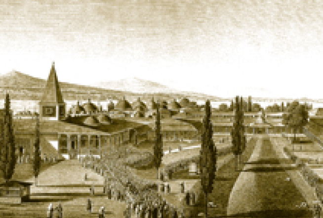

ESKİ HAZİNE DAİRESİ (DIŞ HAZİNE)
Kubbealtı’nın yanında bulunan sekiz kubbeli bina imparatorluk hazinesinin saklandığı yerdir. İmparatorluğun son dönemlerinde pek çok iç hâdisenin çıkmasına, bu hazinede küpler içinde saklanan altın ve gümüşün miktarı sebep olmuştur. İlk olarak Fatih devrinde inşa edilen binanın günümüzde kitabesi yoktur. Kubbealtı’ndaki Divit Odası’ndan girişi bulunan Hazine Dairesi’ne daha sonraki restorasyonlardan birinde pencereden giriş verilmiş ve bu suretle avluya açılması sağlanmıştır.
Yeniçerilere üç ayda bir ulûfe dağıtımı, Haremeyn’e Surre Alayları ile birlikte para gönderilmesi, padişahların cülûsunda dağıtılan bahşişler bu hazineden karşılanır.
Dış Hazine doğrudan Başdefterdar’a bağlıdır. Hazineden para çıkması için uzun bürokratik işlemler ve onaylar gereklidir.
Dış hazinenin devletin zayıflaması ile birlikte boşaldığı ve paranın ve kıymetli taşların saklandığı hazineye sıradan eşyaların da konulduğu görülür. Dış Hazine’de çuvallar içinde yüzyıllarca saklanan evrak, Meşrutiyet’i müteakip Bâb-ı Âli’ye nakledilmiştir. Eski Hazine Dairesi günümüzde silah koleksiyonunun sergilendiği bir mekândır.
III. Selim Nişantaşı
Eski Hazine Dairesi önünde III. Selim Nişantaşı yer almaktadır. III. Selim döneminde ordunun yenilenmesi maksadıyla kurulan yeni birliklere Nizam-ı Cedid denilmektedir. Bugünkü Levent semtinin bulunduğu yerdeki Levent Çiftliği kışlasında Nizam-ı Cedid askerleri eğitilirdi. Bu yeni ordunun yaptıkları eğitimleri sultanın da takip ettiği bilinir. Nişantaşının üzerinde padişahın Levent’te uzaktan yaptığı ve tam isabet kaydettiği bir tüfek atışından bahsedilmektedir. Taş, bu hatırayı yaşatmak için dikilmiştir. Padişahların silah kullanmakta maharetleri meşhurdur. Eski Hazine Dairesi üzerinde bulunan bir kitabede de Sultan III. Ahmed’in tüfek atışıyla uzak mesafeden bir yumurtayı vurduğundan bahsedilmektedir. III. Selim Nişantaşı’nın yakınlarında eski kaynaklara göre küçük bir mescit olduğu ve Orta Cami şeklinde adlandırıldığı belirtilmekte ise de eser, günümüze kadar ulaşmamıştır.
Bizans Su Sarnıcı
Osmanlı medeniyeti bütün büyük medeniyetler gibi suya yön veren bir medeniyettir. Topkapı Sarayı’nda Osmanlı su medeniyetinin izleri hâlâ sürmektedir. Bizans döneminde de Sarayburnu civarında kırktan fazla sarnıç ve kanal bulunmaktadır. Bunlardan gün yüzünde olan, Bâbü’s saade’ye giden Hünkâr Yolu üzerinde bulunan Bizans Sarnıcı’dır.
Sohum Kalesi Abidesi
Divan Meydanı’nda Bâbü’s saade yakınında bulunan bu abide, Sultan III. Ahmed devrinde yaptırılmıştır. Üzerinde Sultan II. Abdülhamid’in tuğrası vardır. Sohum Kalesi’nin Osmanlıların elinden çıkacağının anlaşılması üzerine kale kitabesi sökülerek Topkapı’ya getirilmiş ve âdeta ibret olması için buraya dikilmiştir.

İkinci avlu